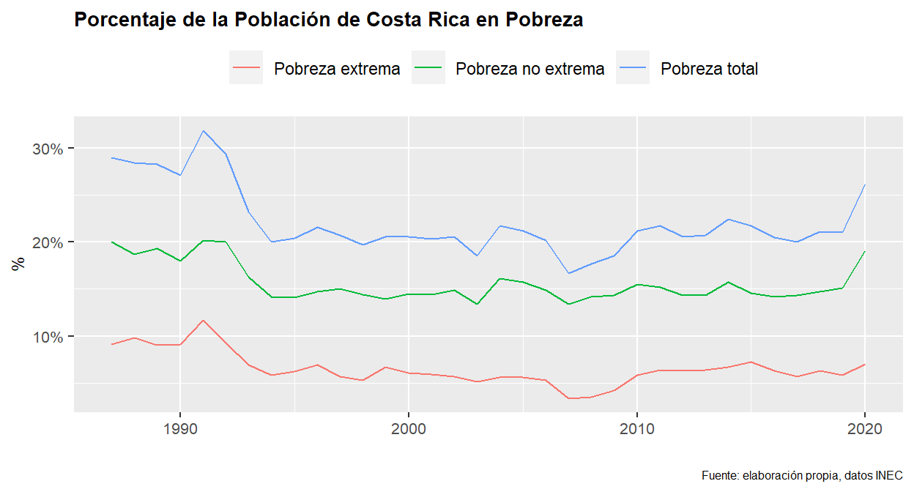
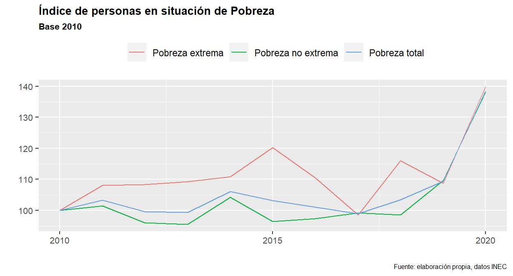
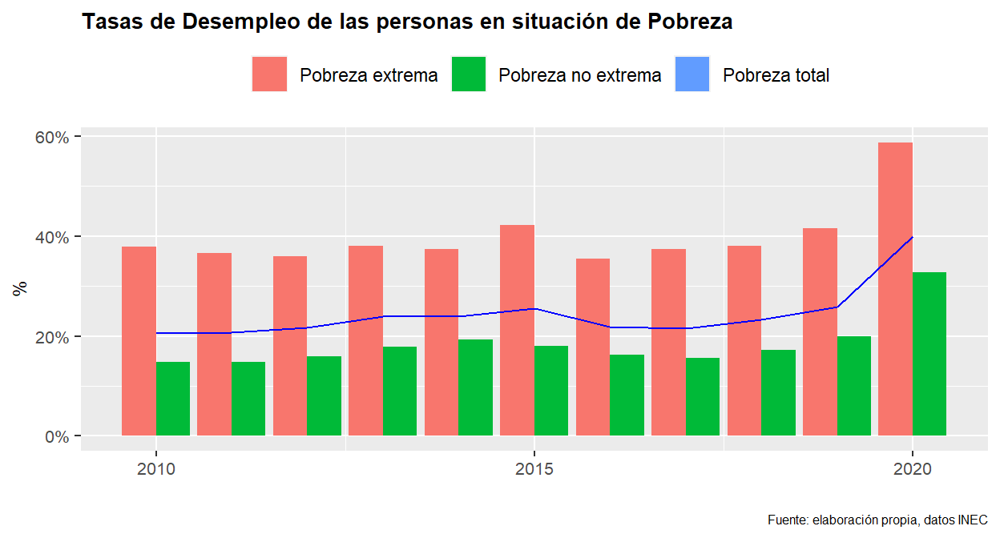
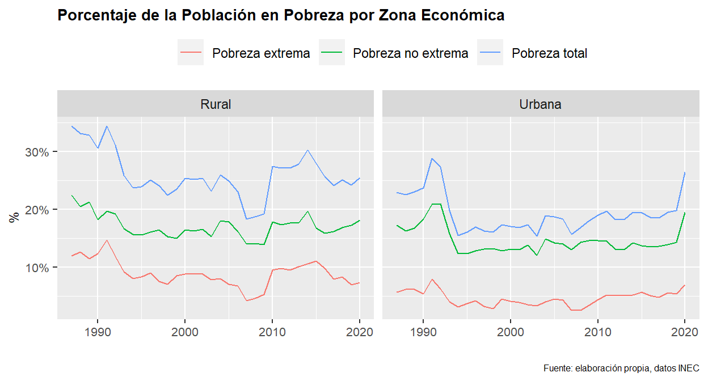
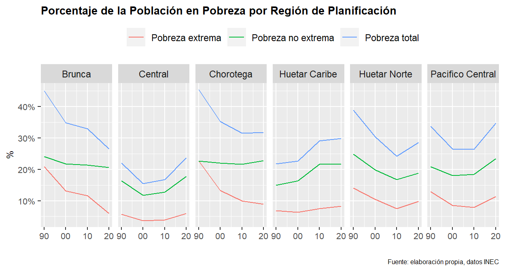
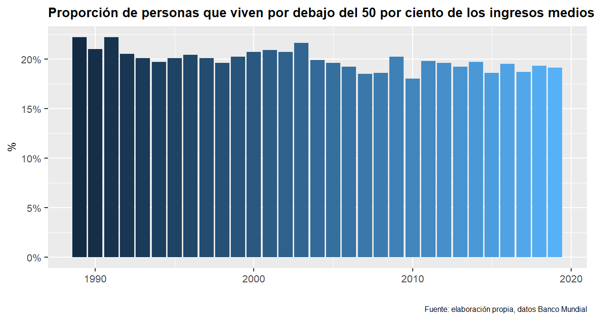
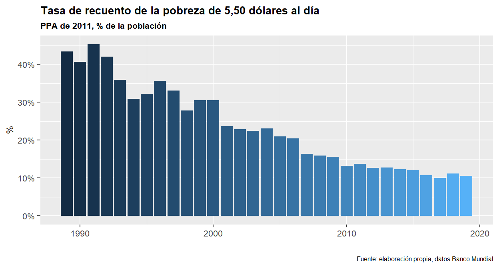

“El problema real de la pobreza no es un problema de”distribución" sino de producción. La única forma permanente de curar la pobreza es incrementar el poder adquisitivo de los pobres” Henry Hazlitt.
En esta publicación abordaremos el comportamiento de la pobreza costarricense a través de distintos indicadores cuya fuente son ENAHO1, EHPM2 (ambas realizadas por el INEC3) y el Banco Mundial4.
Porque en ocasiones los datos hablan por sí solos, estos son datos fríos de la cantidad de personas en situación de pobreza en Costa Rica:
| Año | Pobreza total | Pobreza no extrema | Pobreza extrema |
|---|---|---|---|
| 2010 | 1,103,522 | 792,491 | 311,031 |
| 2015 | 1,137,881 | 763,696 | 374,185 |
| 2019 | 1,207,381 | 868,987 | 338,394 |
| 2020 | 1,529,255 | 1,094,164 | 435,091 |
De acuerdo con Henry Hazlitt, define la pobreza como: “La pobreza individual o familiar se produce cuando el que”ganaba el pan" no puede ya ganarlo; cuando no se puede producir, o no se produce lo suficiente para sostener a su familia ni tal vez a sí mismo." (La conquista de la pobreza, pág 251) Es importante tener en cuenta esta definición, porque nos recuerda que es lo que se analizará en este post.
Es indudable que el efecto de las medidas tomadas en materia de salud que repercutieron a la actividad económica a causa de la pandemia del Covid-19 en el 2020 ha venido a profundizar el daño ya histórico de nuestro país en materia de pobreza; pero es importante dejar claro, que en años anteriores tampoco es que se observaba un cambio radical. Por ejemplo, desde 1987 al 2020, la pobreza total de Costa Rica se ha ubicado en promedio por encima del 20%, sin reflejar ningún cambio en su tendencia. En el caso de la pobreza extrema llegó a un mínimo en el 2007 de 3.3%, sin embargo, muestra un comportamiento al alza, pasando a 6.7% en 2014, 5.8% en 2019 y un 7% en 2020.

Si se toma como referencia el año 2010 y con el fin de evaluar la tendencia de los indicadores respecto a un año base, se observa que en las 3 medidas de pobreza hay una tendencia creciente. Si se compara utlizando los datos del 2019, se observa que la cantidad de personas pobres aumentó en un 9.4%, la pobreza no extrema en un 9.7% y la pobreza extrema en 8.8% (todas respecto al 2010).
Ahora bien, la realidad es que tenemos que ver los efectos de Covid-19, y los números son abrumadores; respecto al 2010 la pobreza total aumentó un 38.6%, la pobreza no extrema un 38.1% y la pobreza extrema un 39.9%.

En cuanto a las tasas de desempleo por tipo de medida de pobreza, se observa que en una década no ha mostrado cambios significativos, con una media del 24% en pobreza total, 18% en pobreza no extrema y 39% en pobreza extrema. Sin embargo, esos son promedios, la realidad es que al cierre del 2020 la tasa de desempleo de personas en situación de pobreza es de 39.98%, en pobreza no extrema es de 32.78% y en pobreza extrema es de 58.7% (se ubica casi 20 p.p. por encima de su promedio).

Ahora bien, veamos la situación por zona económica. Lo primero que llama la atención es que la situación de pobreza es “general” y no enfocada principalmente a la zona rural (como comúnmente se llega a pensar). También, se observa que el impacto del Covid-19 en el agravamiento de la situación de pobreza se dio principalmente en el área urbana, mostrando un fuerte crecimiento respecto a su tendencia estable en años pre-Covid.

En cuanto a las regiones por planificación, destaco lo siguiente:
Con excepción de las regiones Brunca y Central, la pobreza total en las otras regiones se ubica cercana al 30%.
Región Brunca y Choroteca muestran una reducción en sus tasas de pobreza, incluso en el 2020, tanto en pobreza total como en pobreza extrema.
Región Central y Huetar Caribe antes del 2020 ya mostraban un deterioro en la situación de pobreza, con tendencia creciente. El 2020 vino a agravar dicho comportamiento.
Región Huetar Norte y Pacífico Central mostraban un comportamiento levemente a la mejoría, el 2020 cambió la dirección.

La proporción de personas que viven por debajo del 50% de los ingresos medios desde 1989 a 2019 es en promedio un 20%.

Por último, se observa un dato relativamente alentador (pero que muestra un estancamiento en la última década), ya que la tasa de población en pobreza que vive con $5.5 al día pasó de un 45.3% en 1991 a un 10.6% en 2019.

Si bien es cierto que estos datos resultan algo fríos, no escatimo la gran ayuda que han tenido los distintos programas sociales que el país tiene a disposición para paliar el tema de la pobreza, sin embargo, se muestra entonces un juego de “suma cero”, es decir, que mientras unas personas pueden salir de la situación de pobreza, otros entran, de ahí que no se vea una reducción constante en los indicadores mencionados.
Esto nos debe llevar como población a replantearnos el abordaje que se le tiene que dar, más aún, ahora en este año electoral, donde nuestra obligación debe ser exigirles a los candidatos presidenciales ya no el ¿qué?, sino el ¿cómo?
Por eso, me pregunto si ha llegado la hora de que la vieja pero eficaz y destructora idea populista de un trato desigual ante la ley que es la “Justicia Social” sea erradicada en nuestro vocabulario, principalmente por 2 razones:
En primer lugar, hay que entender que la pobreza es una situación individual y que, como tal, puede ser aliviada o reducida, pero no eliminada, esto porque puede llegar a ser meramente subjetiva; es decir, en una situación extrema dependerá de contra quien me compare para decir si soy más o menos pobre.
En segundo lugar, repensar que las ayudas gubernamentales tienden a prolongar el estancamiento o profundización de la situación de pobreza, en lugar de curarla. Por lo general, estas ayudas tienden a salirse de control (información imperfecta) y ocasionan que los incentivos por trabajar y ahorrar disminuyan, tanto para la persona que recibe la ayuda como para el que está obligado a pagarla.
Ya lo menciona Henry Hazlitt en su libro (anteriormente mencionado), la cura propuesta a través de una intervención estatal en el largo plazo tiende a agravar el problema, y sus “recetas” son de manual: leyes para incrementar el poder de los sindicatos, los subsidios especiales, incremento de gasto público, impuestos fuertemente progresivos a los ingresos, impuestos a las ganancias de capital, herencias y empresas; y el socialismo en sus versiones más completas.
Por dicha, el mundo y el ser humano a sabido salir de su condición natural que es ser pobre, y esa salida la encontró a través del trabajo y ahorro, sin planificación consciente, sin la fuerza coercitiva estatal, a través del sistema de división de trabajo, libertad de intercambio y cooperación económica, es decir, y a manera de conclusión; es momento de que nuestro país abrace y ponga en práctica las ideas de Libertad y en especial la económica (capitalismo como guste llamarle), ya que es el único sistema que ha demostrado ser efectivo donde se le haya aplicado y así dejemos de lado, esa ambición de pedirle al Estado que nos resuelva nuestros problemas, ya que parafraseando a Milton Friedman, la mayor fuente de desigualdad en el mundo han sido los privilegios especiales concedidos por el gobierno.
1ENAHO: Encuesta Nacional de Hogares.
2EHPM: Encuesta de Hogares de Propósitos Múltiples.
3INEC: Instituto Nacional de Estadísticas y Censos (Costa Rica).
4Proporción de personas que viven por debajo del 50 por ciento de los ingresos medios: El porcentaje de personas de la población que viven en hogares cuyo ingreso o consumo per cápita es inferior a la mitad de la mediana del ingreso o consumo per cápita. La mediana se mide a la paridad del poder adquisitivo (PPA) de 2011 mediante PovcalNet (http://iresearch.worldbank.org/PovcalNet).
4Tasa de recuento de la pobreza de 5,50 dólares al día, PPA de 2011, % de la población: La tasa de recuento de la pobreza de 5,50 dólares al día es el porcentaje de la población que vive con menos de 5,50 dólares al día a precios internacionales de 2011.
Nota aclaratoria: Para las estadísticas del INEC, los datos de 1897 a 2009 corresponden a la encuesta EHPM y del 2010 al 2020 corresponden a la ENAHO. Si bien las metodologías pueden diferir, se unificarón los datos con el fin de mostrar un comportamiento histórico.